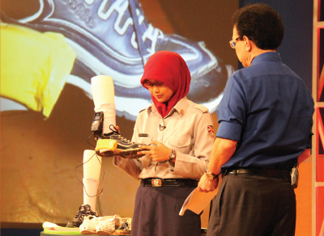
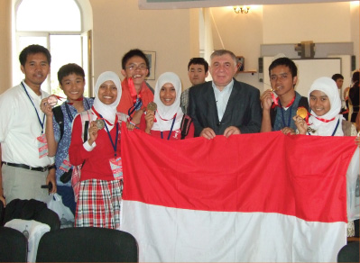

Sekilas tentang Save a Teen
Save a Teen adalah kampanye penggalangan dana yang bertujuan menyetarakan peluang bagi remaja putus sekolah untuk mendapat pendidikan berkualitas. Save a Teen mewadahi kebutuhan Anda untuk menyalurkan bantuan finansial kepada generasi muda prasejahtera yang berprestasi dan berkarakter.


Menggandeng 35 mitra dari sektor perbankan, telekomunikasi, kuliner, dan hiburan, Save a Teen telah membantu puluhan calon pemimpin Indonesia untuk mengenyam pendidikan SMA bertaraf Internasional di Akademi Siswa Bangsa Internasional (ASBI), inisiatif Putera Sampoerna Foundation.
bantu mereka